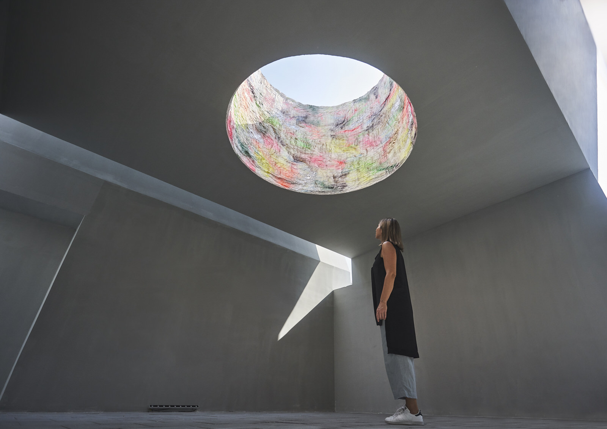
Aidan Imanova
Architecture
A New Way to be Human
Through Is This Tomorrow?, artists and architects blur disciplinary boundaries to propose a future that dares put humanity first
Concrete’s translucent polycarbonate façade and bare-faced interior sets the backdrop for the Dubai iteration of Is This Tomorrow?, an exhibition curated by London-based chief curator of Whitechapel Gallery, Lydia Yee.
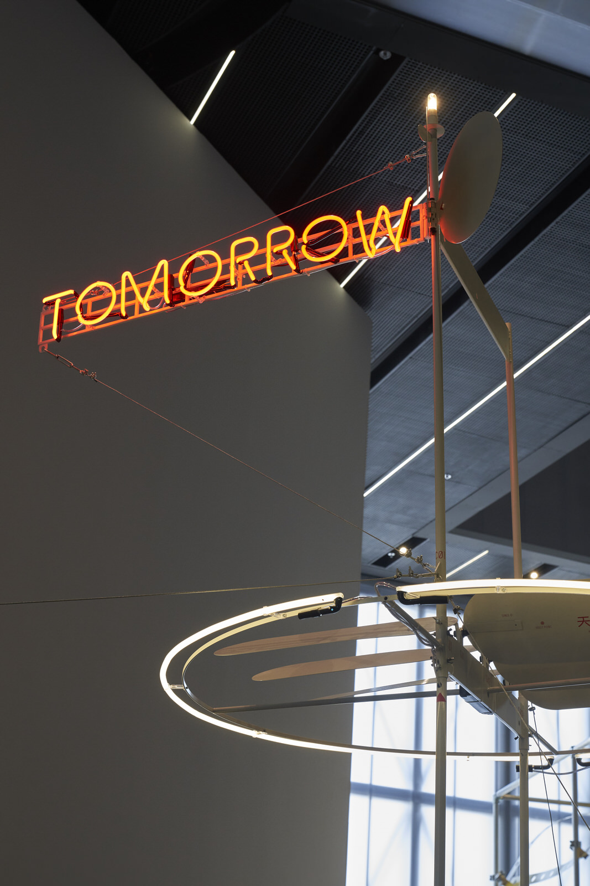
The exhibition – which questions what the inevitable future may hold – asks us to look beyond the bleak façade of our present reality where social, political, technological, and urban failures suggest a future not unlike the contents of the show itself — where architectural forms act as haunting metal animal management systems, construction sites are precarious spaces of concrete and steel, and monumental structures stand in isolation.
The large-scale forms and industrial materiality of all five works bathes architecture in a dystopian light, only brightened by the messages that surround its physical representation.
It is in the symbolic contents of the five works – created through collaborations between artists and architects – that the future presents itself as a place where possible solutions can be found, and where foundations are set upon human values and systems – be it social, political, or urban.
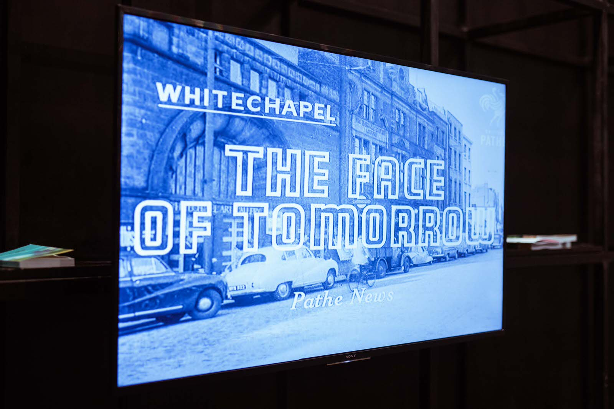
Often, the Brutalist physicality of the exhibition seems to almost deliberately accuse the architectural discipline of being the cause of the majority of today’s environmental and urban issues. Characterised by rigid, monolithic structures, the Brutalist movement emerged in the 1950s – the time period in which the landmark exhibition This Is Tomorrow, on which this show is based on, first emerged, presenting a parallel between art and architecture in a manner that hadn’t been experienced before in post-war London.
“All the things that have gone wrong in the world can partly be blamed on the rapid growth of cities and the excessive amounts of buildings that we’ve built,” says Aga Khan Award for Architecture winner Marina Tabassum, whose work Phoenix Will Rise, in collaboration with London-based Bangladeshi artist Rana Begum, takes on a new life as part of this iteration of the exhibition.
“I think architects, urban planners, and everybody else need to take responsibility for the situation we are in right now,” she adds.
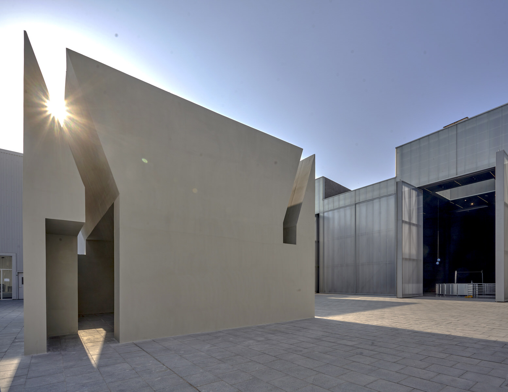
Phoenix Will Rise suggests just that, but still maintains the hope that humanity can save itself through reflection on past, present, and future actions. Set inside a somewhat uninviting monolithic box that is simultaneously probing, the monumental mass of its architecture draws you in to later discover a soft core: a space that lets light in through a brightly-outlined oculus that forces you to literally ‘look up’ to the sky — be it in hope, or in meditation.
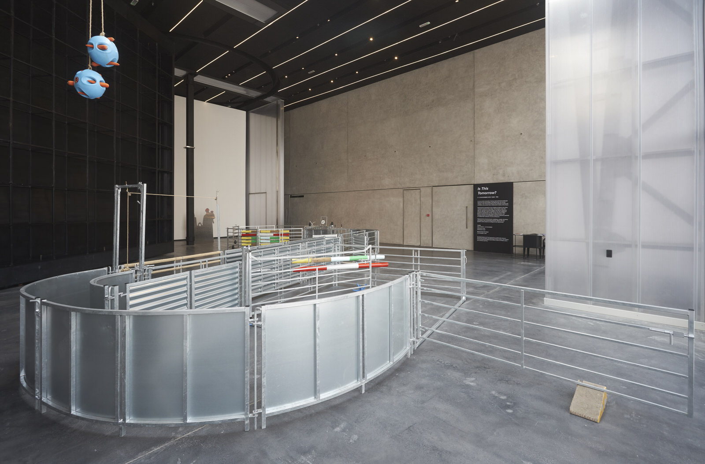
Perhaps the most disconcerting work is by Argentinian artist Amalia Pica and London-based 6a architects, who present a maze-like metal sheep management system that encourages people to put themselves in the position of animals. The choice of metal in this installation reflects upon how physical systems created by people in spaces such as warehouses, airports, and metro systems have come to exert the same level of control over people as they have over animals. However, once again, a sense of temporary relief is presented through whimsical and playful objects such as buoys used to entertain captive seals, or star-shaped rubber chew toys for pigs that hint at our inherent humanity.
This theme runs through the rest of the works, especially Mind Garden, Heart Garden, created by Mexican architect Tatiana Bilbao and artist Mariana Castello Deball, which looks at more human ways of thinking about scale and space. From examining modularity and the human scale in housing, to the Mesoamerican systems for measuring space and time that is related to the human body, the two narratives are interwoven through a cubic scaffolding system symbolic of low-income housing in Mexico City, and perforated metal beams intersecting the structure that represents the Aztec calendar.
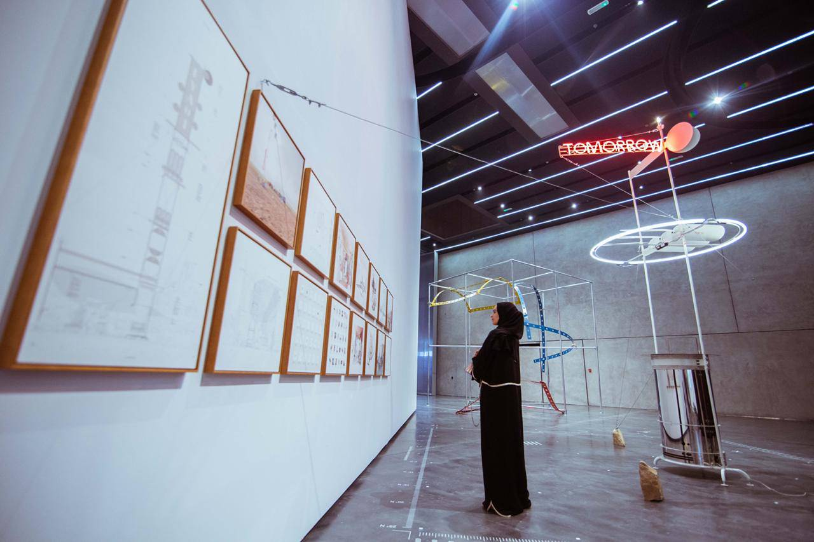
Modularity is further explored in I Want to be the Future – this time through technology – by Beijing-based Cao Fei and mono office, which takes the form of an architectonic device that can extend to the far reaches of China, where citizens are able to escape state-controlled systems of the Internet and create a sense of autonomy for themselves. The somewhat idealistic ‘machine’ attempts to move away from the clichéd image of China as a massive technological giant, but is instead scaled down to the level of an average person or a small business.
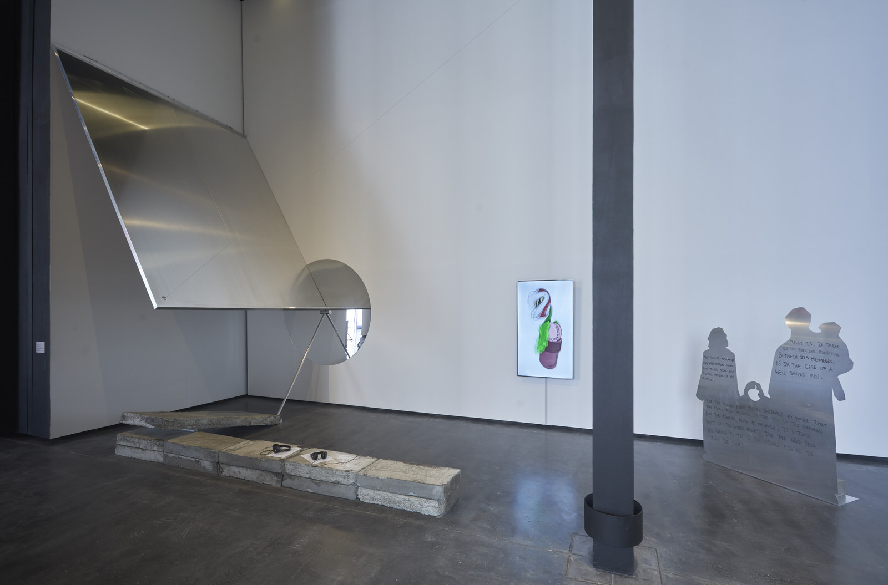
The piece that holds this all together, all the while appearing to fall apart, is APPARATA and Hardeep Pandhal’s Thugz Mansion, an installation that falls “somewhere between a construction site and a ruin”. In this installation, architecture acts as a metaphor for our precarious present, where a large aluminum plane leans against a beam and is supported by a thin metal cable and a leaning prop. What alleviates this threatening environment is the idea of the Thugz Mansion itself: a spiritual and idealised world imagined by the late Tupac Shakur – an alternate heaven if you will – in which like-minded people can live together.
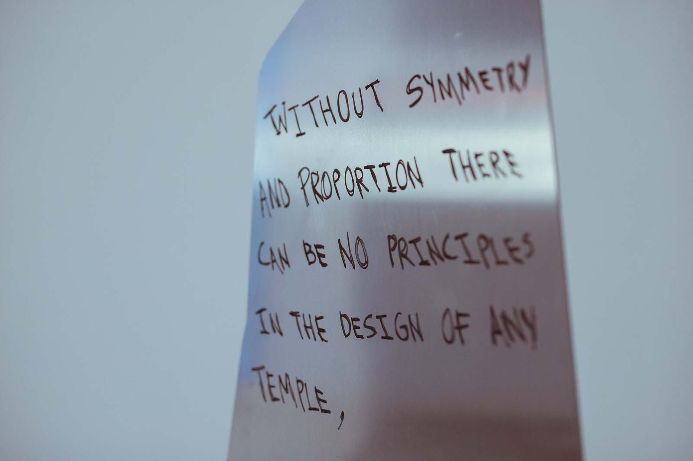
In Is this Tomorrow?, the idea of humanity, and human needs in particular have taken on architectural forms. While it is made clear that urban and political frameworks may have failed society, rethinking these frameworks through teachings of the past and lessons of the present could result in a future where people come first.
Katrina Kufer
Art
Try A Little Tenderness
Is This Tomorrow? uses the intersections of art and architecture to tackle questions of what the future bears, but now, with unexpected softness
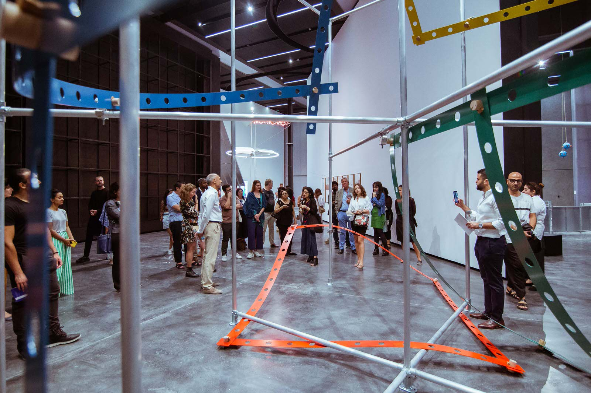
Is This Tomorrow? at first glance is a dystopian shell where industrial materiality—scaffolding, animal pens, concrete and neon—implies that the answer to the exhibition’s title is inevitably bleak. However, the five interdisciplinary collaborative works, brought together within a framework of how and to what end architecture and art can coexist, progressively reveal that the actual response to “what’s next?” doesn’t lie in disconnected, futuristic solutions. Rather, it’s rooted in the past, the present, and a little heart.
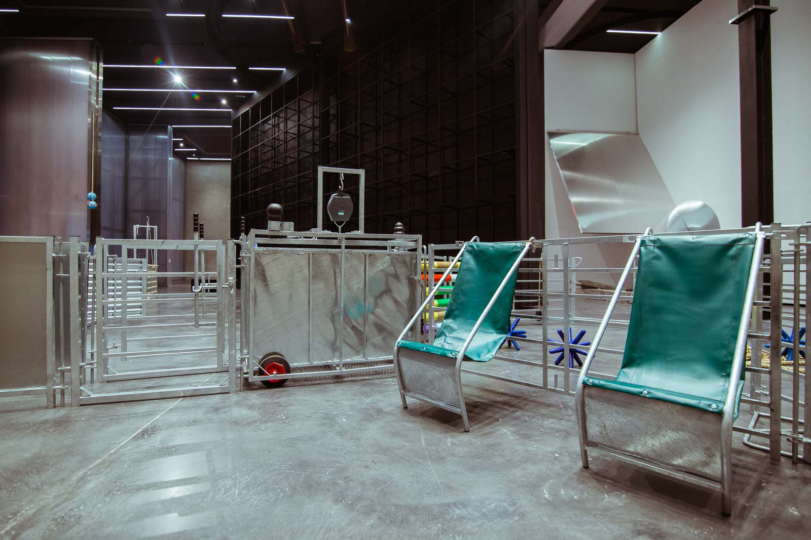
As a refreshed, condensed, and gender-equalised take on the seminal 1956 Whitechapel Gallery exhibition This is Tomorrow, which ran at the London gallery earlier this year, curator Lydia Yee explains that the interactive works consider a tomorrow where emotion, rather than Sci-Fi, could be the guiding light. Each installation approaches future uncertainty from different positions—political, social, infrastructural, metaphysical—but finds commonality through its foundation in and around the human condition, embodying the tension of struggling to work with and against existing modes of thought and process.
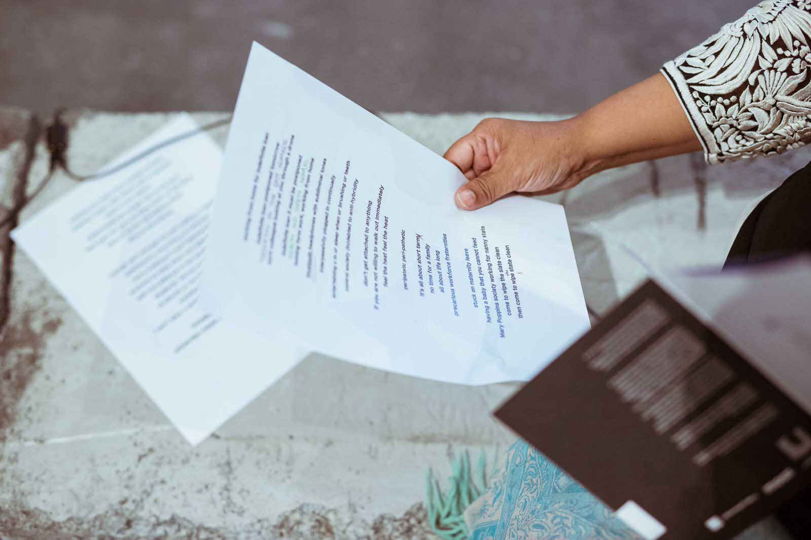
The issue of control resonates immediately, first visible through Argentinian Amalia Pica and UK-based 6a architects’ Enclosure, a scaled-down animal pen that blurs the boundary between who and what is caged or free. It outlines how humanity corals and constructs environments, imposing unnatural scenarios into natural hierarchies, not unlike UK’s Hardeep Pandhal and APPARATA’s Studies for Thugz Mansion, which manifests this interference through a Richard Serra-esque installation of metal sheets and concrete slabs. Buildings, as a symbol of control via encasement, separation and a form of ordering, are used a vehicle to comment on what would happen if the political systems which create and support these structures would collapse. The presumed outcome still easily veers towards pessimism given the perilous, physics-defying balance of the installation, but paired with Pandhal’s rap compositions, an inkling of something warmer emerges.
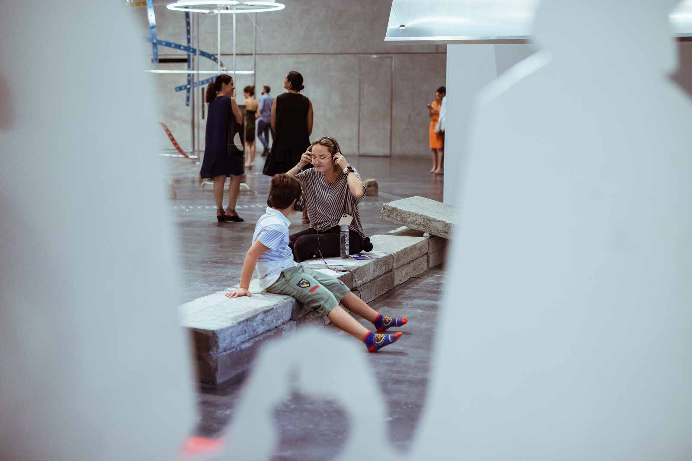
Though reinforcing ideas that control’s implosion will yield disastrous results, the musical accouterments are explained to indicate that beyond this reality—in an alternate time and space—is a nirvana, wherein “Thugz Mansion” is the entry into a reality of hope and opportunity, a place to reflect with likeminded figures. It alters the perception of the neighbouring animal pen, where now the dangling carrots, wooden poles, and rubber Jacks clarify roles as stress-relievers for animals, who chew on them to alleviate anxiety from being caged. Both works send the contradictory message that larger forces will try to control you, but they will also attempt to gently console you.
This paradox is explored by Mariana Castillo Deball and Tatiana Bilbao Estudio’s Tonalpohualli—a skeletal cube representing mass-produced housing in Mexico. Dangling, colourful, curved, and perforated metal strips connected by wooden plugs represent roofs and walls—a form of separation as much as comfort given ideas of “home” revolve around “a roof over your head”. It outlines the confusing zone between wanting privacy but needing community. The measuring system mirrors this confusion of boundaries—again distorting time as well as space, says Yee—by incorporating Mesoamerican methods that used the heart and other body parts as markers of measurement. Even the most industrial realms are still rooted in humanity, it seems.
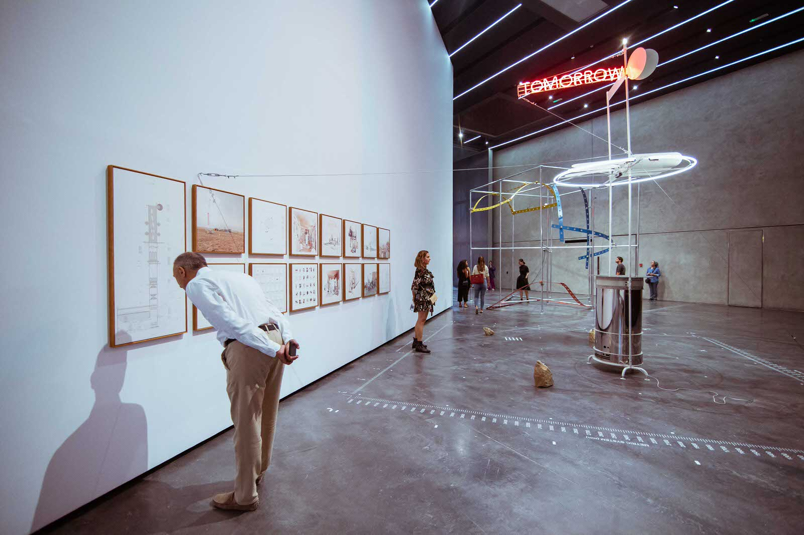
A drive towards connectedness and away from seclusion appears in Chinese Cao Fei and mono office’s I want to be the future. A ramshackle machine prototype that promises basic services—emotional and practical—to the rapidly urbanised yet under-prepared cities of China, it highlights a willingness to collectively innovate and make do with what is available to support each other in a weariness-inducing contemporary society. The framed drawings on the wall imagine the circumstances in which it could be used, dispensing objects and satiating emotional and physical needs in efforts to advance and facilitate lives. It’s a naïve, well-intentioned glimmer of idealistic hope in an environment dominated by—literally and figuratively—hard edges.
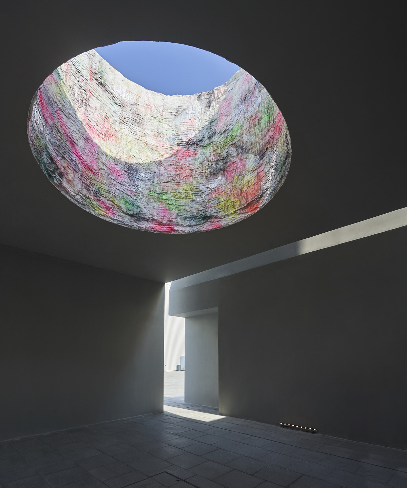
But it is the first, and last, collaboration of the exhibition that visitors encounter that drives the increasing sensitivity of the works home. Bangladeshi Rana Begum and Marina Tabassum Architects’ freestanding building Phoenix Will Rise outside of Concrete is a James Turrell-like refuge of reflection and hope encased in a stoic architectural box with angled cut outs. The softness of refracted colour and light in the skyward-looking oculus proposes via its meditative ambiance—even maybe asserts—to visitors who stand within it pondering the answer to “Is this tomorrow?” that the outside is harsh but inside there’s room—and the necessity—to try just a little tenderness.
The Dubai iteration of Is This Tomorrow? is a collaboration between Alserkal Arts Foundation and Whitechapel Gallery, London. The exhibition is co-commissioned by Whitechapel Gallery, London and MAAT, Lisbon. The exhibition runs until 23 November in Concrete, Alserkal Avenue.